Components
Every component in the standard library — its symbol, what it does, and its parameters. Symbols are rendered from the live drawing engine; parameter defaults are the as-placed values.
Name is the parameter key (as it appears in the editor and the netlist).
Default / Unit are the as-placed value. Parameters marked
shown appear as a label on the schematic by default; others are available in the parameter
editor. Units accept SI prefixes (pF, nH, GHz, kΩ).
Lumped elements
Resistor (R)
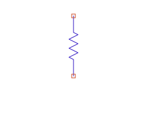
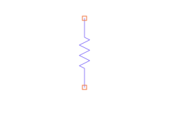
An ideal, frequency-independent resistor.
| Name | Default | Unit | Meaning |
|---|---|---|---|
| R | 1 | Ω | Resistance (shown). |
Inductor (L)
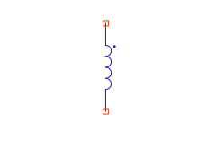
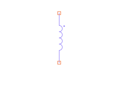
An ideal inductor. Couple two inductors with a Mutual element.
| Name | Default | Unit | Meaning |
|---|---|---|---|
| L | 1 | nH | Inductance (shown). |
Capacitor (C)
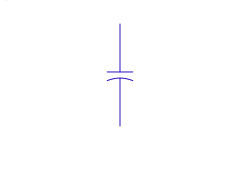
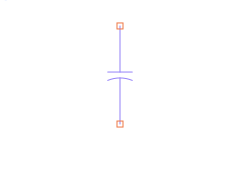
An ideal, linear capacitor. For a voltage-dependent capacitance, see NonlinearC.
| Name | Default | Unit | Meaning |
|---|---|---|---|
| C | 1 | pF | Capacitance (shown). |
Nonlinear Capacitor (NonlinearC)


A capacitor whose capacitance varies with voltage, C(V), modeled as a polynomial (Taylor) series. Enter the coefficients directly, or generate them from a C–V curve with the C–V Editor. Full treatment: The Nonlinear Capacitor & the C–V Editor.
| Name | Default | Unit | Meaning |
|---|---|---|---|
| C0 | 1 | pF | Constant term of the C(V) polynomial (shown). |
| C1, C2, … | — | — | Higher-order polynomial coefficients (added in the editor / generated by the C–V Editor). |
Mutual Inductance (M)
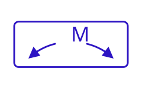
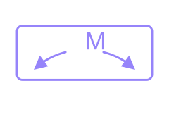
Couples two existing inductors (named by instance) with a mutual inductance — the basis for transformers and coupled resonators. It has no pins of its own; it references the two inductors by name.
| Name | Default | Unit | Meaning |
|---|---|---|---|
| Inductor1 | "L1" | — | Instance name of the first coupled inductor. |
| Inductor2 | "L2" | — | Instance name of the second coupled inductor. |
| M | 0 | pH | Mutual inductance between them. |
Sources
DC Voltage Source (Vdc)
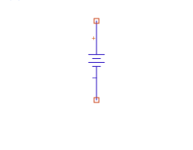
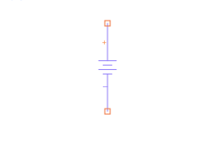
A fixed DC voltage — gate and drain bias supplies.
| Name | Default | Unit | Meaning |
|---|---|---|---|
| Vdc | 0 | V | DC voltage (shown). |
Tone Source (VTone)
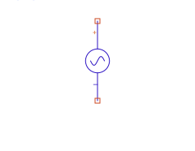
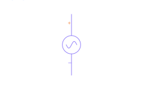
A single-tone (sinusoidal) voltage source for harmonic balance, with an optional DC offset.
| Name | Default | Unit | Meaning |
|---|---|---|---|
| V | 1 | V | Tone amplitude (shown). |
| Freq | 1 | GHz | Tone frequency (shown). |
| Vdc | 0 | V | DC offset (hidden). |
RF Power Source (P1Tone)
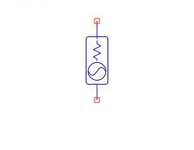
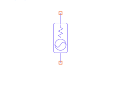
An RF source specified by available power with an internal source impedance — the
natural drive for power-amplifier and loadpull work. It can also serve as an S-parameter port (via
Num), and accepts per-harmonic source terminations Z[k] for harmonic
source-pull.
| Name | Default | Unit | Meaning |
|---|---|---|---|
| Num | 1 | — | S-parameter port index (shared pool with Term). |
| Pavl | 0 | dBm | Available power (shown). |
| Z | 50 | Ω | Fundamental source impedance (shown). |
| Freq | 1 | GHz | Fundamental frequency (shown). |
| Phase | 0 | deg | Phase (hidden). |
| Z[k] | — | Ω | Per-harmonic source termination: Z[0] = baseband/DC, Z[2] = 2nd harmonic, etc. (added in the editor). |
Multi-Tone RF Power Source (PnTone)
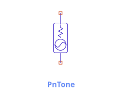
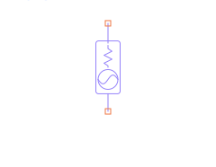
The multi-tone sibling of P1Tone — an available-power RF source that injects
several carriers at once from a single component, the natural drive for two-tone
intermodulation work. A freshly placed PnTone is already a two-tone source (tones 1 and 2,
at 1.99 and 2.01 GHz); the +/− buttons in the editor add or remove tones.
Each tone has its own Freq[i], Pavl[i], and Phase[i]; all tones share
one source impedance Z and the same per-band terminations Z[k].
Unlike P1Tone, PnTone is not an S-parameter port (no Num). The tones a PnTone drives
must match the tones declared on the Harmonic Balance analysis —
the analysis owns the mixing grid; the source just supplies power at those frequencies.
| Name | Default | Unit | Meaning |
|---|---|---|---|
| Freq[1] | 1.99 | GHz | Frequency of tone 1 (shown). |
| Pavl[1] | 0 | dBm | Available power of tone 1 (shown). |
| Phase[1] | 0 | deg | Phase of tone 1 (hidden). |
| Freq[2] | 2.01 | GHz | Frequency of tone 2 (shown). |
| Pavl[2] | 0 | dBm | Available power of tone 2 (shown). |
| Phase[2] | 0 | deg | Phase of tone 2 (hidden). |
| Freq[i]… | — | GHz | Add tone 3, 4, … with the + button (tone 1 cannot be removed). |
| Z | 50 | Ω | Shared source impedance (the reference / fundamental Z, shown). |
| Z[k] | — | Ω | Per-band source termination shared by all tones: Z[0] = baseband/DC, Z[2] = 2nd-harmonic band, etc. Each mixing product is terminated by the band its frequency falls in (added in the editor). |
Terminals & ports
Ground (GND)


The global reference node (net 0). No parameters.
Term


An S-parameter port: a numbered, reference-impedance termination where the simulator excites and measures. See Pins, Ports & Terms for how it differs from a Pin.
| Name | Default | Unit | Meaning |
|---|---|---|---|
| Num | 1 | — | Port index (auto-assigned at placement; shown). |
| Z | 50 | Ω | Reference impedance (shown). |
Pin


A cell's interface terminal — connectivity only, no electrical model. Pins on a cell's symbol are how the cell connects to the parent that instances it.
| Name | Default | Unit | Meaning |
|---|---|---|---|
| Num | 1 | — | Interface port index (auto-assigned; shown). |
| Name | (blank) | — | Optional port label; extraction uses P{Num} when blank. |
| Polarity | — | — | Optional Plus/Minus to form a differential pair sharing one Num (set in the editor). |
Current Probe (IProbe)
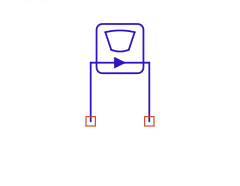
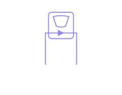
A 0 V series ammeter placed in a branch to read its current. Its instance name (e.g. Iout)
is how measurements reference the current: I("Iout", 1). No parameters.
Tuner / SourceTuner / LoadTuner
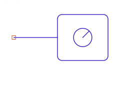
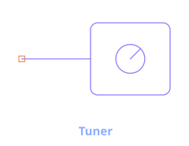
A programmable RF termination used by loadpull/sourcepull. The three variants are the same engine
component with different glyphs and net ordering — match the symbol to its role.
SourceTuner sits on the source side, LoadTuner on the load side. Per-harmonic
terminations are set with Z[k] (or G[k] for a reflection coefficient).
| Name | Default | Unit | Meaning |
|---|---|---|---|
| Z[1] | 50 | Ω | Fundamental termination (required; accepts complex literals, e.g. 50+j*10). Add Z[2], … in the editor. |
| Zdefault | 1e-6 | Ω | Catch-all termination for unspecified harmonics. |
| Z0 | 50 | Ω | Reference impedance for any G[k] (reflection-coefficient) entry. |
| BiasTee | off | — | Toggles the internal bias-tee + DC supply (required on by the loadpull directive). |
| Vbias | 0 | V | DC bias at the DUT-facing port (when BiasTee is on). |
| ShowBias | false | — | Display-only: draw the bias-tee on the glyph (never reaches the engine). |
Transmission lines
Ideal Transmission Line (TLIN)
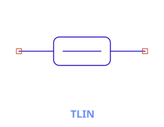
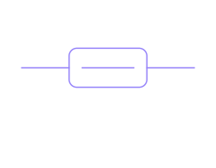
An ideal, lossless transmission line specified by characteristic impedance and electrical length at a reference frequency.
| Name | Default | Unit | Meaning |
|---|---|---|---|
| Z | 50 | Ω | Characteristic impedance (shown). |
| E | 90 | deg | Electrical length at frequency F (shown). |
| F | 1 | GHz | Reference frequency for E (shown). |
Impedance N-Port (Z)


An N-port defined by its impedance matrix Z[p,q]. The symbol grows with the port count —
see Dynamic symbols.
| Name | Default | Unit | Meaning |
|---|---|---|---|
| NumPorts | 2 | — | Number of ports N (hidden; drives the symbol/pin count). |
| Z[p,q] | 50 | Ω | Each entry of the N×N impedance matrix (shown). |
Data-file components
Touchstone N-Port (SnP)


An N-port backed by a Touchstone (.sNp) file — measured or modeled S-parameters embedded in
the circuit, interpolated onto the analysis sweep. The symbol is dynamic; pin arrangement, pitch, and the
floating-reference option are covered in Dynamic symbols.
| Name | Default | Unit | Meaning |
|---|---|---|---|
| NumPorts | 2 | — | Number of ports (hidden). |
| File | (none) | — | Path to the Touchstone file (shown). |
| RefNode | false | — | If true, expose a floating common reference pin (N+1 nets) instead of grounding each port. |
| PinConfig | Standard | — | Pin arrangement on the symbol. |
| Pitch | Loose | — | Pin spacing on the symbol. |
| InterpMode | Cubic | — | Frequency interpolation between data points. |
| ExtrapMode | NearestEdge | — | Behavior beyond the data's frequency range. |
Nonlinear devices
Symbolically-Defined Device (SDD)


A user-defined nonlinear device: you write each port current (and charge) as an equation in the port voltages, and circuitRF differentiates it automatically for the solver. This is how the GaN FET model in the netlist example is defined. The symbol is dynamic — see Dynamic symbols.
| Name | Default | Unit | Meaning |
|---|---|---|---|
| NumPorts | 2 | — | Number of ports (hidden; drives the 2N differential pins). |
| I[x,0] | _vx/50 | — | Port-x current equation (seeded as a 50 Ω conductance; weight 0 = the current itself). |
| Q[x], I[x,w], H[w] | — | — | Optional charge equations, higher weightings, and weighting functions. |
| C[n] / Cport[n] | — | — | Bind a control current _cn to another device's current. |
The SDD is deep — the equation grammar (I[p,w], Q[p]), weighting functions
H[w], and how to reference another device's current (_cn /
C[n]) are all covered in The SDD.
FET (SDD-based)
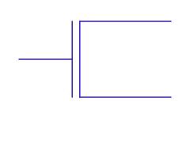
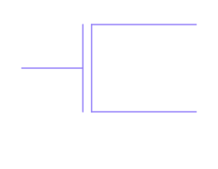
A field-effect-transistor presentation of the SDD, with gate / drain / source terminals. Define its I–V behavior with SDD equations, exactly as in the netlist example.
Annotation components
Variables (VAR)
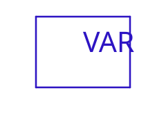
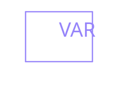
A port-less annotation that holds name = expression variable definitions, scoped to where
it's placed (global at the test bench top, or local inside a cell). Variables are sweepable. Edit the rows
in the multi-line text editor (double-click the VAR). No fixed parameters.
Measurements (MEAS)


A port-less annotation that holds name = expression measurement equations evaluated after a
run (e.g. Pout_dBm = 10*log10(...)). Measurements attach at the top test-bench level only. Edit
the rows in the same multi-line editor as VAR. No fixed parameters.
See also: Dynamic symbols (SDD / ZPort / SnP) · Nonlinear Capacitor & C–V Editor · Pins, Ports & Terms · Netlist format.